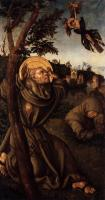

Christian Art: Українська
Старий Завіт

Адам і Єва (36)

Давид (9)

Мойсей (3)

Ной (3)

Пророки (26)

Соломон (4)

Створення світу (7)

Сцени зі Старого Завіту (33)

Юдита (8)
Новий Заповіт

Іван Хреститель (20)

Апокаліпсис (25)

Апостол Павло (10)

Апостол Петро (11)

Бог Отець (3)

П’ятидесятниця (4)

Страшний суд (11)
Сцени з Нового Завіту (29)
Діва Марія

Батьки Діви (7)

Благовіщення (32)

Богородиця і Дитя (206)

Втеча до Єгипту (20)

Коронація Богородиці (12)

Портрет Богородиці (11)

Сцени з життя Богородиці (21)

Успіння (15)
Ісус Христос

Ісусові притчі (6)

Введеня в храм (7)

Вознесіння (3)

Воскресіння (26)

Вхід до Єрусалиму (2)

Людина скорботи (8)

Плач над Христом (43)

Поклоніння дитині (36)

Портрет Ісуса (25)

Преображення (3)

Розп'яття (59)

Різдво (19)

Служіння Ісуса (37)

Страсті Христові (73)

Таємна вечеря (8)

Хрещення Господнє (3)
Християнство

Ангели (19)

Пекло (9)

Пороки (16)

Рай (6)

Святий Франциск (44)
Святий Франциск (44)

Святі (249)

Трійця (10)

Церква (35)

Чесноти (25)
Artists
А
Ангел Акотантос (16)
Альбрехт Альтдорфер (24)
Фра Анджеліко (146)
Ульріх Апт (2)
Пітер Артсен (8)
Б
Ганс Бальдунг (26)
Дірк Баутс cтарший (34)
Дерік Бегерт (7)
Жан Бельгамб (4)
Амброзіус Бенсон (16)
Віллем Бенсон (3)
Ян де Бер (6)
Ієронімус Босх (44)
Ганс Бургкмайр (46)
Д
Джотто (162)
Дуччо (80)
Альбрехт Дюрер (92)
К
Робер Кампен (19)
Йос ван Клеве (38)
Міхіль Коксі (13)
Колін де Котер (10)
Лукас Кранах Старший (193)
Петрус Крістус (17)
Пітер Кук ван Альст (17)
М
Мікеланджело (36)
П
Георг Пенц (8)
Р
Рафаель (117)
Андрій Ріцос (9)
Ш